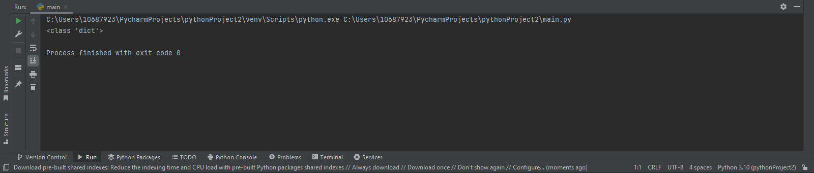
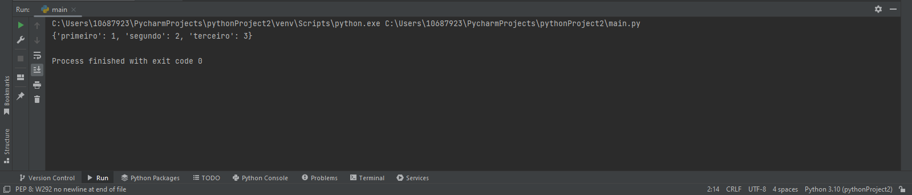

Dicionários Introdução
Os dicionários são coleções de itens e seus elementos são armazenados de forma não ordenada.
Seus elementos contém uma chave e valor, isto é:
Sua sintaxe básica é: {'chave': 'valor'}. Utiliza-se {} para delimitar o dicionário e a chave é separada do valor por dois pontos :.
exemplos:
dicionario = {'chave':'valor'}
(type(dicionario))
Resultado

Criando dicionários
Vejamos então as 6 maneiras possiveis de se criar um dicionário
Para começarmos vamos com o modo mais simples de se criar um dicionário:
dicionario = {'primeiro':1, 'segundo':2, 'terceiro':3}
dicionario2 = (primeiro=1,segundo=2,terceiro=3 )
dicionario3 = dict(zip(['primeiro',
'segundo',
'terceiro'],
[1, 2, 3]))
dicionario4 = dict([('primeiro',
1), ('segundo',
2), ('terceiro',
3)])
dicionario5 = {name: idx + 1for idx, name inenumerate(('primeiro',
'segundo',
'terceiro'))}
dicionario6 = dict({'primeiro': 1, 'segundo': 2, 'terceiro': 3 })

Conclusão
Vimos aqui a introdução aos dicionários e os modos que podemos declararos, mais pra frente aprenderemos mais sobre eles e como funcionam, fique bem e códifique sem moderação.